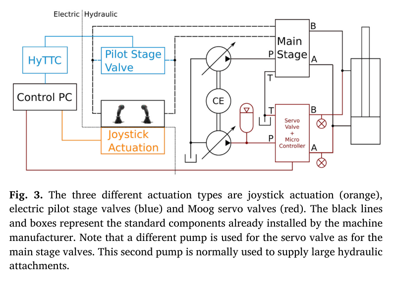
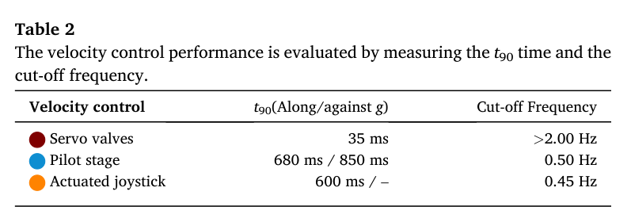
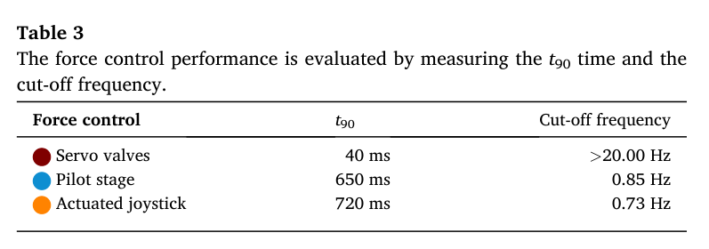
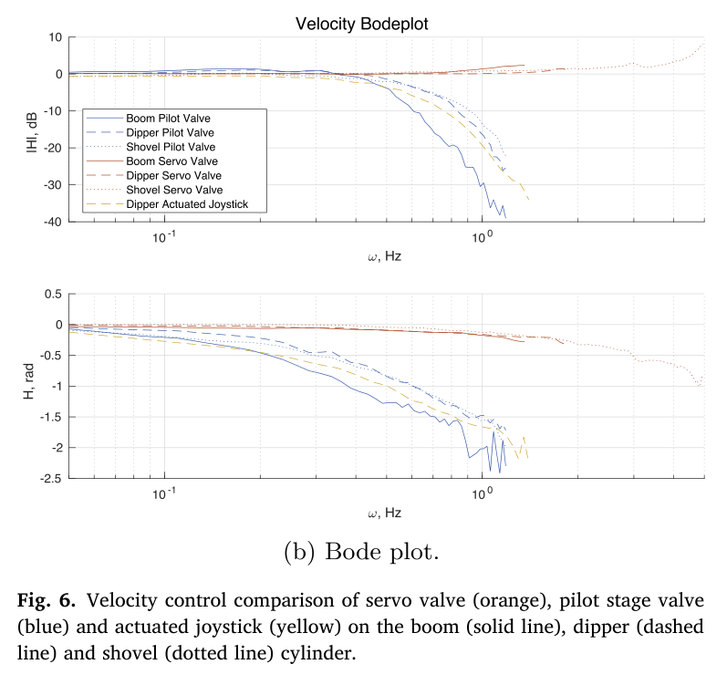
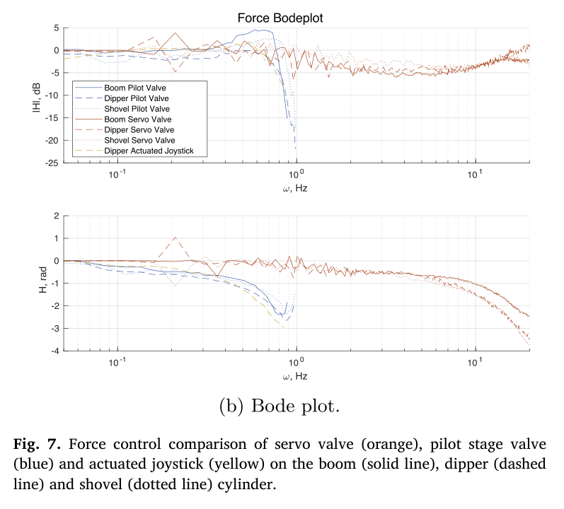
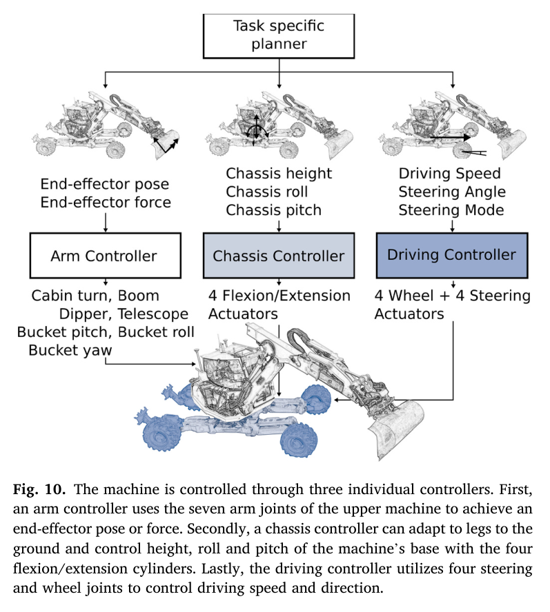
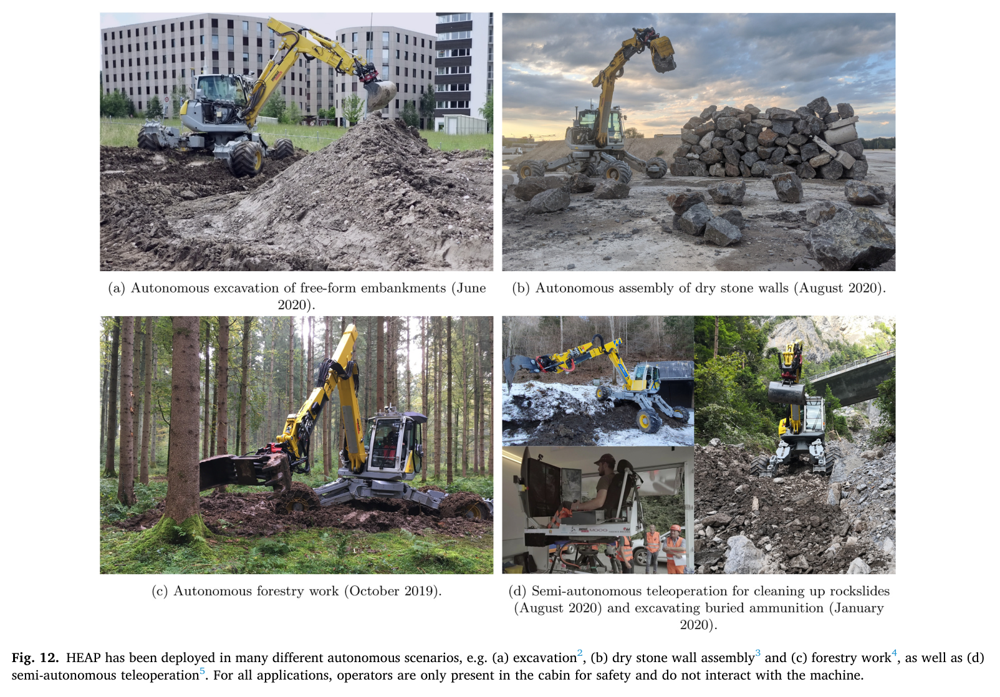

01 / ABSTRACT & KEY FINDINGS
자율성은 알고리즘만으로 완성되지 않는다
HEAP는 12 t급 보행 굴착기 Menzi Muck M545를 자율 로봇으로 바꾼 약 5년의 시스템 개발을 담은 연구다. 핵심은 하나의 제어기보다, 기계·유압·센서·계산·현장 임무를 연결한 전체 설계에 있다.
초록
연구진은 조이스틱 구동 기구, 전기 파일럿 밸브, 서보 밸브를 같은 기체에 구현해 속도와 힘 제어 응답을 정량 비교했다. 여기에 바퀴와 다리를 함께 가진 기체의 상태 추정, 주행·차체·팔 제어, 펌프 유량 한계를 포함한 계층 최적화를 결합했다. 제방 굴착, 돌담 조립, 임업, 반자율 원격 조작은 이 설계가 현장 작업으로 이어질 수 있음을 보여 준다. 동시에 밸브 성능만으로 해결되지 않는 펌프 응답, 기름 오염, 호스 압축성, 차체 진동의 영향을 드러낸다.
명령 경로가 응답을 결정한다
파일럿 밸브와 조이스틱 구동의 속도 대역은 약 0.5 Hz로 비슷하다. 주요 지연을 이해하려면 주 밸브와 압력 형성 과정까지 보아야 한다.
빠른 센서와 정확한 센서는 다르다
실린더 위치 센서는 빠른 유압 제어에, 링크 IMU는 세계 좌표계 기준 말단 자세와 정밀도에 기여한다. HEAP는 두 센서의 역할을 나눴다.
현장 성능은 물리적 제약에서 나온다
펌프 유량, 실린더 한계, 충돌 회피를 작업 목표보다 우선한다. 유압 동력원과 지면까지 고려해야 빠른 제어가 실제 작업 성능이 된다.
02 / PLATFORM & SENSING
기존 굴착기를 활용하되,
관측 방식은 새로 설계한다
상용 기계를 자율화하면 기체 자체를 새로 개발하는 데 드는 시간과 비용을 줄일 수 있다. 그러나 사람이 감각적으로 보완하던 유격, 지연, 흔들림을 이제 센서와 제어기가 다뤄야 한다. HEAP의 장비 구성은 이 간극을 메우기 위한 선택이다.
| 측위 | Leica iCON iXE3 GNSS-RTK 안테나 2개와 캐빈·차체 IMU(SBG Ellipse2-A)를 사용한다. |
|---|---|
| 관절 | Sick 드로와이어 센서로 실린더 위치를, 링크 IMU로 세계 기준 자세를 측정한다. 빠른 유압 제어와 말단 정밀도를 함께 확보하기 위한 이중 구성이다. |
| 지각 | Velodyne VLP-16 LiDAR 2대를 사용한다. 먼지가 있는 작업 환경을 고려한 선택이다. |
| 계산 | 캐빈의 i7 PC에서 저수준 제어·추정기·상위 제어를 운용한다. CAN 통신과 제어 주기는 100 Hz이며, ROS는 비실시간 영역을 담당한다. |
| 차체 | 실린더 14개에 서보 밸브를 내장한 모듈(ICM)을 적용했다. 오염으로 막히던 1세대 노즐–플래퍼 방식에서 2세대 직접 구동 밸브(DDV)로 전환했다. |
실린더 길이와 링크 자세를 함께 측정하는 이유
실린더 길이는 낮은 지연으로 읽을 수 있어 유압 제어에 유리하다. 하지만 이를 관절각과 말단 위치로 변환하는 과정에서 기구학 오차와 관절 유격의 영향이 누적된다. 링크 IMU는 상대적으로 느리더라도 세계 기준 자세를 제공하므로 말단의 기하학적 정확도를 높이는 데 도움이 된다.
03 / COMPARATIVE EVIDENCE
같은 기체에서 비교한
세 가지 자동화 경로
굴착기의 팔을 자동으로 움직이는 방법은 유압 회로에 얼마나 깊이 개입하는가에 따라 달라진다. 이 논문의 중요한 기여는 세 방식을 하나의 기체에 구현해 비교했다는 점이다.
조이스틱 구동 기구
기계 장치가 기존 조이스틱을 움직인다. 유압 회로를 수정하지 않고 운전자의 입력을 대체한다.
전기 파일럿 밸브
저압 파일럿 회로에 개입한다. 기존 주 밸브를 활용하는, 널리 쓰이는 저비용 후장착 경로다.
서보 밸브
고압 회로에 직접 개입한다. HEAP의 구성에서는 별도 펌프와 축압기를 함께 사용한다.

파일럿 밸브는 어떻게 제어했나
Hawe PMZ 비례 감압 밸브를 조이스틱과 병렬로 연결했다. 피스톤 속도 제어는 목표 속도를 전류로 바꾸는 13점 룩업 표 기반 피드포워드와 100 Hz PI 제어를 결합한다. 로드센싱 특성을 이용해 부하가 달라져도 같은 표를 사용한다. 힘 제어에는 PI와 데드존 보상을 적용했다.
| 구동 방식 | 속도 t90 | 속도 대역 | 힘 t90 | 힘 대역 |
|---|---|---|---|---|
| 서보 밸브 | 35 ms | > 2 Hz | 40 ms | > 20 Hz |
| 파일럿 밸브 | 680 / 850 ms | 0.50 Hz | 650 ms | 0.85 Hz |
| 조이스틱 구동 | 600 ms | 0.45 Hz | 720 ms | 0.73 Hz |


지연의 원인은 조이스틱보다 깊은 곳에 있다
조이스틱 구동과 파일럿 밸브의 속도 응답이 비슷하다는 것은, 지연의 상당 부분이 입력 장치보다 주 밸브와 계통 압력 형성 과정에서 발생한다는 해석을 뒷받침한다. 파일럿단의 680 ms와 850 ms 차이도 중력 방향과 압력이 차오르는 과정에 연결된다.
논문은 파일럿단 압력 센서와 steer-by-wire를 갖춘 일부 기체라면 주 밸브가 열리기 전에 계통을 가압할 수 있다고 설명한다. 시험에 사용한 M545에서는 이 기능을 이용할 수 없었다.


빠른 밸브를 붙이면,
그동안 보이지 않던 기계의 동역학이 드러난다.
04 / ESTIMATION & CONTROL
잘 추정하고, 지켜야 할 한계부터 정한다
상태 추정: 측정값을 많이 넣는다고 좋아지지 않는다
연구진은 잔차 기반 필터(TSIF)에 IMU 예측, GNSS 갱신, 바퀴 굴림 예측, 다리 오도메트리를 통합하는 구조를 설계했다. 그러나 시뮬레이션에서는 바퀴 미끄럼 때문에 굴림·다리 잔차가 오히려 추정을 악화시켰다. 실차에서는 IMU와 GNSS만 사용했으며, 나머지 잔차는 향후 미끄럼 검출과 GNSS 단절 대응을 위한 가능성으로 남았다.
선회각 측정에도 보완이 필요했다. 기어 이 98개를 읽는 유도 센서의 분해능은 0.92°였고, 이를 캐빈과 차체 IMU의 각속도 차를 이용한 상보 필터로 보완했다.
7개 관절 구성
굴신 실린더 4개
4개 바퀴

팔 제어: 목표보다 먼저 오는 제약
계층 최적화는 모든 목표를 동등하게 취급하지 않는다. 물리적 제약을 먼저 만족시키고, 그 범위 안에서 작업 목표를 달성한다. 역동역학 구성은 관절 5개와 작업 공간 4차원을 사용하며, 우선순위는 다음과 같다.
- 운동 방정식관성·코리올리·중력뿐 아니라 점성 마찰, 정지 마찰, 말단 힘을 포함한다.
- 펌프 유량 한계여러 실린더가 동시에 요구하는 유량을 펌프의 공급 한계 안에 둔다.
- 실린더 힘 한계기체 자세에 따라 달라지는 힘의 한계를 반영한다.
- 실린더 속도 한계실린더가 낼 수 있는 속도 범위를 지킨다.
- 위치 한계관절과 실린더의 허용 이동 범위를 넘지 않는다.
- 자기 충돌 회피기체 구성 요소 사이의 충돌을 피한다.
- 말단 자세버킷의 방향을 위치 추종보다 우선한다.
- 말단 위치상위 제약과 자세 목표를 만족하는 범위에서 위치를 추종한다.
- 관절 감쇠남은 자유도에서 관절 움직임을 안정화한다.
자세가 위치보다 우선인 이유는 작업 의미에 있다. 충돌을 피하는 과정에서 버킷이 기울어 흙을 쏟으면, 위치 오차를 줄여도 임무는 실패할 수 있다. 이 우선순위는 단순한 수학적 선택이 아니라 작업의 성공 조건을 표현한다.
역기구학 구성은 관절 7개와 작업 공간 6차원을 사용한다. 유량·속도·위치·충돌 제약 이후 자세와 위치를 추종하고, 마지막으로 관절 속도를 최소화한다. 목표 속도는 궤적 속도에 PID 보정을 더해 만든다.
05 / FIELD DEMONSTRATIONS
네 가지 임무가 보여 준
성능과 적용 조건
HEAP는 굴착뿐 아니라 무거운 돌의 배치, 숲속 작업, 위험 지역 원격 조작에 사용됐다. 각 사례는 서로 다른 성능 지표와 센서 조건을 가진다. 따라서 아래 수치를 하나의 공통된 ‘로봇 정확도’로 읽어서는 안 된다.

자유 형상 제방 굴착
3–5 cm 평균 오차
2020년 6월 시연에서 두 면 제방은 0.03 m, 30 m³ 규모의 S자 제방은 0.05 m의 평균 오차를 기록했다. 힘 제어가 필요한 굴착 중에는 역동역학을, 공중 이동에는 역기구학을 사용했다.
돌담 조립
109개 평균 돌 무게 1,030 kg
돌의 배치 오차는 0.128 m, 돌 하나의 작업 시간은 700–1,300초였다. 팔 IMU는 돌의 형상을 다루는 데 필요한 메시 정밀도에 기여했다.
숲속 작업
30 / 40 cm 그리퍼 / 차체 오차 이내
숲에서는 GNSS가 불안정해 LiDAR 측위를 사용했다. 관절 측정 구성에서도 드로와이어를 제거하고 IMU만 사용해, 작업 환경에 맞게 센서 구성을 바꿨다.
반자율 원격 조작
200 m 참호 작업
제2차 세계대전 불발탄 지역에서 약 100 ms 지연의 영상으로 원격 운전했다. 차체 자세 자동 제어는 운전자가 원격으로 작업을 수행하는 데 중요한 요소였다.
06 / ENGINEERING LESSONS
현장에서 드러난 진짜 모델
논문의 개발 통찰은 유압 기체를 이상적인 강체 로봇으로 다루기 어려운 이유를 설명한다. 제어 대역을 높이면 그동안 상대적으로 작게 보였던 오차와 진동이 새로운 한계가 된다.
굴착기는 정밀 로봇이 아니다
관절 유격은 노후화와 함께 커지고, 기름 오염은 고성능 밸브를 막으며, 온도 변화는 링크 길이에도 영향을 준다. 실린더 길이만으로 말단 위치를 계산하면 이 효과를 놓칠 수 있다. 링크 자세를 직접 측정하는 센서가 필요한 이유다.
펌프는 빠른 밸브를 따라가지 못할 수 있다
서보 밸브가 만드는 급격한 유량 요구는 압력 강하와 피크를 유발한다. 기존 펌프와 제어기가 이를 따라가지 못하면 엔진이 꺼질 수도 있다. HEAP는 축압기를 이용해 급격한 요구를 완충했다. 더 발전된 제어에는 유압 동력원의 동역학을 포함할 필요가 있다.
유압은 완전히 뻣뻣하지 않다
기름의 압축성과 긴 호스의 팽창은 압력 진동을 만든다. 고온에서는 호스의 영향도 커진다. 실린더가 거의 움직이지 않는데 압력만 진동할 수 있으며, 연구에서는 노치 필터로 해당 성분을 제거했다. 일반 굴착기에서는 압력 동역학이 제어 대역보다 약 한 자릿수 빠르기 때문에 이 문제가 덜 두드러진다.
12톤의 무게가 안정을 보장하지 않는다
타이어는 스프링처럼 작동한다. 팔 제어 대역이 차체 흔들림의 고유진동수에 가까워지면 기체 전체가 응답에 관여한다. 궤도식 장비도 무른 지면에서는 비슷한 문제를 겪을 수 있다. 작업기가 지면에 접촉하면 지지 조건이 달라져 흔들림이 완화될 수 있다.
07 / IMPLICATIONS FOR HR35
HR35에 옮겨 갈 것은
성능 수치보다 검증 질문이다
원 노트는 HEAP의 결과를 3.5 t급 궤도식 HR35와 디지털 트윈 개발에 연결한다. 유압 구동 경로가 유사하다면 HEAP의 파일럿단 결과는 유용한 비교 기준이 된다. 다만 기체, 밸브, 부하와 동력원이 다르므로 0.5 Hz와 680–850 ms를 HR35의 확정 성능으로 사용할 수는 없다.
| 주제 | 적용 가설 | 관측·검증 방법 |
|---|---|---|
| 파일럿단 응답 | 조이스틱 명령이 비례 밸브와 기존 주 밸브를 거치는 HR35라면, HEAP의 파일럿단이 응답 비교의 출발점이 된다. | 실차와 트윈의 스텝 응답을 비교하고 t90·지연·대역을 식별한다. 2차계와 데드타임 모델의 적합성을 검토한다. |
| 방향별 비대칭 | 중력 방향과 반대 방향에서 압력 축적 과정과 응답 지연이 달라질 수 있다. | 올림·내림을 분리해 시험한다. HEAP의 680 / 850 ms 차이와 같은 비대칭이 존재하는지, 트윈이 이를 재현하는지 확인한다. |
| 유효 압축성 | 트윈의 β는 기름뿐 아니라 호스 팽창 등을 묶은 유효 파라미터로 해석할 수 있다. | 압력 진동을 측정하고 모델과 비교한다. 주파수만으로 β를 단정하지 않고 유체 체적, 부하와 호스 특성의 영향도 구분한다. |
| 펌프 공급 한계 | 논문 식 19–20의 유량 제약은 트윈에 펌프 한계를 추가하는 간결한 출발점이다. | 여러 축을 동시에 구동할 때 요구 유량의 합과 속도 저하를 비교한다. 정적 유량 제한과 펌프의 과도 응답을 구분한다. |
| 센서 역할 분리 | 경사계·링크 자세 센서는 말단 정확도에, 실린더 센서는 빠른 제어에 유리할 수 있다. | 센서 지연과 말단 오차를 따로 평가한다. 절대 자세 측정의 이점과 유압 폐루프의 지연 요구를 함께 확인한다. |
| 차체와 지면 | HR35는 궤도식이어도 무른 지면에서 차체 흔들림이 팔 제어에 영향을 줄 수 있다. | 팔 제어 대역과 차체 고유진동수를 별도로 측정한다. 원 노트가 지목한 F·G축도 접지 조건에 따라 비교한다. |
다음 실험을 위한 체크리스트
- 명령에서 주 밸브까지의 실제 구동 경로와 센서 구성을 기록한다.
- 상승·하강 시험을 나누고, 자세·부하·유온·접지 조건을 함께 남긴다.
- 실차와 트윈에 동일한 입력을 주고 지연, t90, 정상상태 오차를 비교한다.
- 압력 진동과 차체 흔들림을 구분할 수 있도록 압력·위치·자세를 함께 기록한다.
- 단일 축 결과에 더해 여러 축 동시 구동에서 펌프 유량 한계를 확인한다.
THE TAKEAWAY
다음 알고리즘을 고르기 전에,
기계가 어떻게 응답하는지 측정하자
HEAP의 성과는 서보 밸브의 35 ms 응답이나 제방의 3–5 cm 오차 하나로 설명되지 않는다. 센서마다 역할을 나누고, 유압 공급 한계를 제약으로 표현하며, 현장의 흔들림과 오염을 설계에 되돌려 넣은 결과다.
새로운 기체에 적용할 때 가장 먼저 가져올 것은 이 접근법이다. 명령이 움직임이 되기까지의 지연을 재고, 정확도가 무너지는 위치를 찾고, 실제 작업에 필요한 우선순위를 정한다. 자율 굴착기의 설계는 그 측정에서 시작된다.
08 / SOURCES & NOTES
출처와 해석 범위
HEAP – The autonomous walking excavator
Dominic Jud, Simon Kerscher, Martin Wermelinger, Edo Jelavic, Pascal Egli, Philipp Leemann, Gabriel Hottiger, Marco Hutter.
ETH Zürich Robotic Systems Lab · Moog Industrial Group
Automation in Construction, 129, 103783, 2021.
DOI: 10.1016/j.autcon.2021.103783 · 원 논문 라이선스: CC BY.
- 작성 범위. 이 글은 제공된 한국어 Obsidian 논문 요약을 공개용 연구 리뷰로 재구성한 문서다. 원 논문을 새로 대조하거나 독립적으로 재현한 검증 보고서는 아니다. 본문의 수치와 실험 조건은 제공된 요약에 근거한다.
- 그림과 표. Fig. 2, 3, 6, 7, 10, 12 및 Table 2, 3은 제공된 원 논문 이미지다. 모든 이미지의 출처는 Jud 외(2021), 위 DOI의 CC BY 논문이다. 한국어 캡션은 요약·재작성했으며, HTML 비교표와 제어 개념도는 제공된 노트를 바탕으로 재구성했다.
- 수치의 적용 범위. 제어 응답은 해당 기체와 시험 구성의 결과다. 굴착 평균 오차, 돌 배치 오차, 임업 위치 오차는 서로 다른 작업에서 얻은 지표로 직접 비교할 수 없다. “>”가 붙은 대역은 정확한 상한값을 뜻하지 않는다.
- HR35 해석. HR35와 디지털 트윈에 대한 제안은 노트 작성자의 응용 관점이다. HEAP의 측정 결과가 HR35에서 재현된다는 증거로 제시하지 않았다.
- 추가 문헌 표기. 원 노트에는 “ETH 2026”, “ANZCC 2020”, “Casoli”, “서울대 MCV”가 관련 연구의 약칭으로 등장한다. 완전한 서지 정보가 제공되지 않아 이 글에서는 독립적인 근거로 인용하지 않았다. 상태 의존 지연, 2차계·데드타임 식별, 유압 모델 비교는 후속 검토 항목이다.